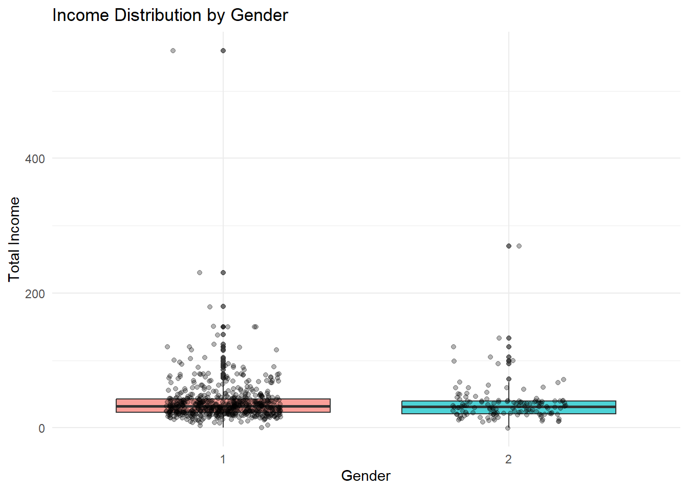
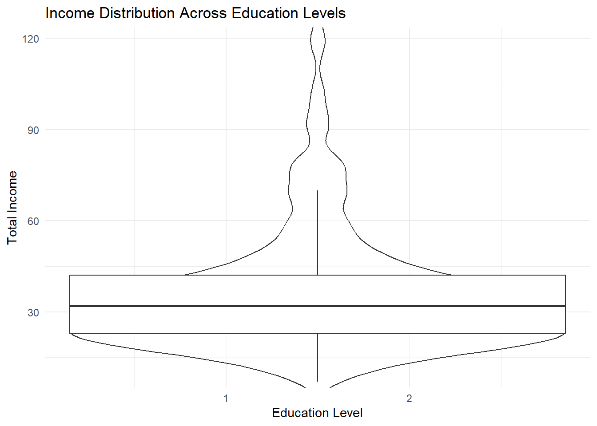
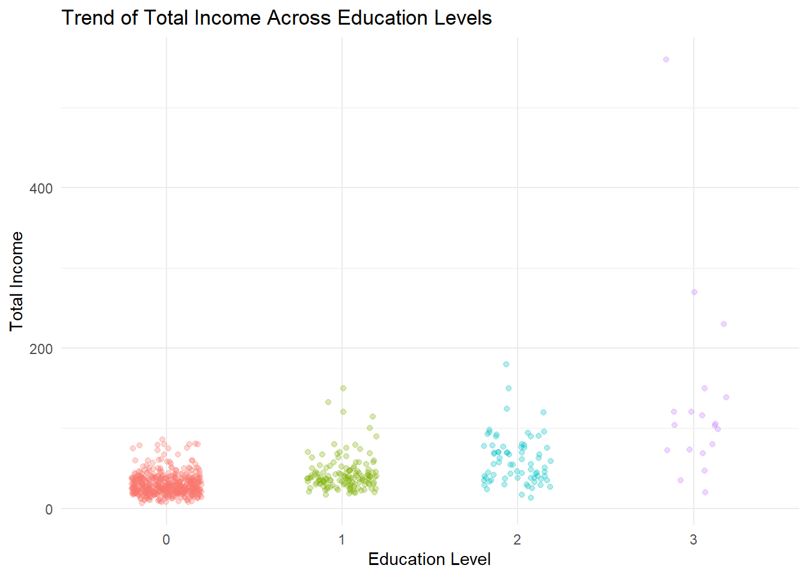
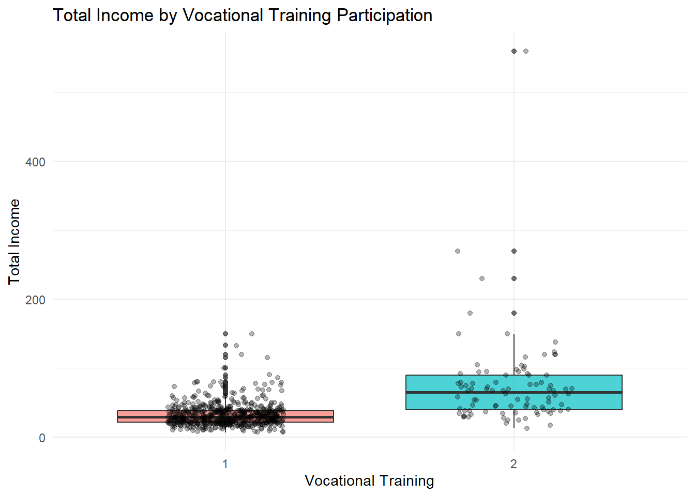

pacman::p_load(ggiraph, patchwork, DT, tidyverse, ggrepel, ggthemes, hrbrthemes, readxl)Take-home_Exercise01
1. Overview
1.1 Setting the scene
Informal labour is a major source of livelihood in rural northern Vietnam, where workers often lack formal contracts and stable wages. Income varies widely and is influenced by factors such as education, vocational training, credit access, and technology use. This dataset captures the demographic profiles, income sources, and influencing factors of rural labourers across five provinces.
1.2 Our Task
In this exercise, Exploratory Data Analysis (EDA) methods and ggplot functions are used to explore:
the distribution and composition of rural labourers’ income, and
how characteristics and factors such as education, training, credit accessibility, and technology relate to income differences.
2. Getting Started
2.1 Load Packages
First, we will write a code chunk to check, install and launch the following R packages:
ggiraph: for making ‘ggplot’ graphics interactive.
DT: provides an R interface to the JavaScript library DataTables that create interactive table on html page.
tidyverse: a family of modern R packages specially designed to support data science, analysis and communication task including creating static statistical graphs.
patchwork: for combining multiple ggplot2 graphs into one figure.
ggrepel: an R package provides geoms for ggplot2 to repel overlapping text labels.
ggthemes: an R package provides some extra themes, geoms, and scales for ‘ggplot2’.
hrbrthemes: an R package provides typography-centric themes and theme components for ggplot2.
We load the following R packages using the pacman::p_load() function:
2.2 The Data
To accomplish the task, the dataset “Income of Informal Labourers in Rural Areas: A Survey Dataset of Northern Mountainous Regions in Vietnam” obtained from the authors’ survey and shared via Mendeley Data will be used. The dataset contains 725 survey responses with variables covering respondent characteristics, income sources, and socio-economic impact factors.
The code chunk below imports the Excel dataset into the R environment by using the read_excel() function from the readxl package.
library(readxl)income_vn <- read_excel("data/Upload for elsiver.xlsx")glimpse() of the dplyr package allows us to see all columns and their data type in the data frame.
2.3 Data pre-processing
Before performing the analysis, the dataset was examined using glimpse() to understand the structure, variable types, and presence of missing values. Several variables were stored as character or numeric codes representing categorical responses. These variables were converted into appropriate data types such as factor or numeric to ensure accurate visualisation and interpretation.
Additionally, missing values were identified and handled where necessary to reduce bias in subsequent analysis. The focus of preprocessing was mainly on the Characteristics (C), Income (T), and Impact Factors (F) variables, as these form the core of this study.
glimpse(income_vn)Rows: 725
Columns: 30
$ CPRO <dbl> 1, 1, 1, 1, 1, 1, 1, 1, 1, 1, 1, 1, 1, 1, 1, 1, 1, 1, 1, 1, 1, 1,…
$ CGEN <chr> "1", "1", "2", "1", "2", "2", "1", "1", "1", "1", "1", "2", "2", …
$ CRAC <dbl> 2, 2, 2, 2, 2, 2, 2, 2, 2, 2, 2, 1, 1, 2, 2, 2, 1, 1, 1, 1, 1, 1,…
$ CJOB <dbl> 1, 1, 3, 1, 1, NA, 3, 1, 3, 1, 1, 1, 2, 1, NA, 2, 1, 1, 1, 1, 1, …
$ CQUI <dbl> 3, 5, 3, 3, 3, 4, 1, 3, 3, 3, 3, 3, 2, 3, 5, 1, 2, 2, 2, 2, 2, 2,…
$ TEIN <dbl> 37, 25, 33, 35, 36, 21, 35, 36, 38, 30, 58, 24, 32, 11, 22, 95, 4…
$ TAIN <dbl> 25, 22, 25, 30, 28, 17, 25, 28, 26, 22, 40, 24, 23, 11, 20, 30, 3…
$ TSII <dbl> 7, 0, 0, 5, 0, 0, 0, 0, 12, 2, 0, 0, 0, 0, 0, 50, 17, 10, 12, 15,…
$ TOIN <dbl> 5, 3, 8, 0, 8, 4, 10, 8, 0, 6, 18, 0, 9, 0, 2, 15, 0, 0, 0, 0, 16…
$ FEDU <dbl> 1, 0, 1, 1, 0, 0, 3, 0, 2, 0, 0, 0, 0, 0, 0, 2, 1, 2, 2, 2, 2, 2,…
$ FVTP <dbl> 1, 1, 1, 1, 1, 1, 2, 1, 2, 1, 1, 1, 1, 1, 1, 2, 1, 2, 2, 2, 2, 2,…
$ FCRA <dbl> 1, 2, 1, 1, 1, 1, 1, 1, 1, 1, 1, 1, 1, 1, 1, 1, 1, 1, 1, 1, 1, 1,…
$ FTAP <dbl> 1, 1, 2, NA, 2, 2, 2, 2, 2, 2, 2, NA, NA, 2, NA, 2, NA, 2, NA, NA…
$ LHO1 <dbl> NA, 1, NA, 1, NA, NA, NA, NA, NA, NA, NA, NA, NA, NA, 1, NA, NA, …
$ LHO2 <dbl> 1, NA, NA, NA, 1, 1, NA, 1, 1, 1, 1, 1, NA, 1, NA, NA, NA, NA, NA…
$ LHO3 <dbl> NA, NA, NA, NA, NA, NA, 1, NA, NA, NA, NA, NA, 1, NA, NA, 1, 1, 1…
$ LHO4 <dbl> NA, NA, 1, NA, NA, NA, NA, NA, NA, NA, NA, NA, NA, NA, NA, NA, NA…
$ LCRE <dbl> NA, 15, NA, NA, NA, NA, NA, NA, NA, NA, NA, NA, NA, NA, NA, NA, N…
$ LSAV <dbl> 5, NA, 30, NA, NA, 2, 70, NA, 25, 10, 15, NA, NA, 16, NA, 20, NA,…
$ LWDA <dbl> 240, 350, 260, 300, 360, 360, 260, 260, 300, 300, 270, NA, NA, 20…
$ PPO1 <dbl> 5, 2, 5, NA, 5, 2, 5, 5, 4, 5, 4, NA, NA, NA, NA, NA, NA, NA, NA,…
$ PPO2 <dbl> 2, 5, 5, NA, 5, 4, 2, 2, 3, 1, 1, NA, NA, NA, NA, NA, NA, NA, NA,…
$ PPO3 <dbl> 3, 3, 1, NA, 1, 3, 3, 3, 3, 3, 3, NA, NA, 1, NA, 1, NA, 1, NA, 1,…
$ PPO4 <dbl> 1, 1, 1, NA, 1, 1, 2, 2, 2, 2, 2, NA, NA, 3, NA, NA, NA, NA, NA, …
$ PPO5 <dbl> 3, 1, 1, NA, 1, 1, 3, 3, 3, 3, 3, NA, NA, 1, NA, NA, NA, NA, NA, …
$ ARO1 <dbl> 3, 1, 1, NA, 1, 1, 2, 2, 2, 2, 2, NA, NA, NA, NA, NA, NA, NA, NA,…
$ ARO2 <dbl> 1, 1, 1, NA, 1, 1, 1, 1, 1, 2, 1, NA, NA, 2, NA, NA, NA, NA, NA, …
$ ARO3 <dbl> 1, 1, 1, NA, 1, 1, 3, 3, 2, 3, 3, NA, NA, 1, NA, 1, NA, NA, NA, 1…
$ ARO4 <chr> "3", "3", NA, NA, "2", "2", "3", "3", "3", "3", "3", NA, NA, "3",…
$ ARO5 <dbl> 1, 1, 1, NA, 1, 1, 3, 3, 3, 3, 3, NA, NA, 1, NA, NA, NA, NA, NA, …Rename Columns
library(dplyr)
income_vn2 <- income_vn %>%
rename(
Province = CPRO,
Gender = CGEN,
Race = CRAC,
Career = CJOB,
Income_Quintile = CQUI,
Total_Income = TEIN,
Agri_Income = TAIN,
Service_Income = TSII,
Other_Income = TOIN,
Education = FEDU
)Recode Gender
income_vn2 <- income_vn2 %>%
mutate(Gender = recode(Gender,
"1" = "Male",
"2" = "Female"))Recode Race
income_vn2 <- income_vn2 %>%
mutate(Race = recode(Race,
`1` = "King",
`2` = "Minorities"))Recode Career
income_vn2 <- income_vn2 %>%
mutate(Career = recode(Career,
`1` = "Agriculture",
`2` = "Service/Industrial",
`3` = "Others"))Recode Income Quintile
income_vn2 <- income_vn2 %>%
mutate(Income_Quintile = recode(Income_Quintile,
`1` = "Lowest",
`2` = "Second",
`3` = "Middle",
`4` = "Fourth",
`5` = "Top"))Recode Education
income_vn2 <- income_vn2 %>%
mutate(Education = recode(Education,
`0` = "Primary",
`1` = "Lower Secondary",
`2` = "Upper Secondary",
`3` = "Others"))Convert to Factor
income_vn2 <- income_vn2 %>%
mutate(across(c(Gender, Race, Career, Income_Quintile, Education), as.factor))unique(income_vn$FEDU)[1] 1 0 3 2 NAunique(income_vn$CQUI)[1] 3 5 4 1 2 NAsummary(income_vn$Total_Income)Warning: Unknown or uninitialised column: `Total_Income`.Length Class Mode
0 NULL NULL table(income_vn$Gender)Warning: Unknown or uninitialised column: `Gender`.< table of extent 0 >table(income_vn$Education)Warning: Unknown or uninitialised column: `Education`.< table of extent 0 >names(income_vn) [1] "CPRO" "CGEN" "CRAC" "CJOB" "CQUI" "TEIN" "TAIN" "TSII" "TOIN" "FEDU"
[11] "FVTP" "FCRA" "FTAP" "LHO1" "LHO2" "LHO3" "LHO4" "LCRE" "LSAV" "LWDA"
[21] "PPO1" "PPO2" "PPO3" "PPO4" "PPO5" "ARO1" "ARO2" "ARO3" "ARO4" "ARO5"income_vn <- income_vn %>%
rename(
Province = CPRO,
Gender = CGEN,
Race = CRAC,
Career = CJOB,
Income_Quintile = CQUI,
Total_Income = TEIN,
Agri_Income = TAIN,
Service_Income = TSII,
Other_Income = TOIN,
Education = FEDU,
Vocational_Training = FVTP,
Credit_Access = FCRA,
Technology = FTAP
)summary(income_vn$Total_Income) Min. 1st Qu. Median Mean 3rd Qu. Max. NA's
0.00 23.00 31.50 38.00 42.25 560.00 1 table(income_vn$Gender)
1 2
592 133 table(income_vn$Education)
0 1 2 3
474 136 73 19 colSums(is.na(income_vn)) Province Gender Race Career
0 0 0 49
Income_Quintile Total_Income Agri_Income Service_Income
4 1 1 6
Other_Income Education Vocational_Training Credit_Access
0 23 23 2
Technology LHO1 LHO2 LHO3
102 512 402 616
LHO4 LCRE LSAV LWDA
653 636 520 160
PPO1 PPO2 PPO3 PPO4
209 230 88 99
PPO5 ARO1 ARO2 ARO3
106 102 102 89
ARO4 ARO5
111 108 Missing values were observed mainly in living condition and opinion-related variables, while key demographic and income variables contained minimal missing data. Therefore, missing values were retained and handled selectively during visual analysis rather than being entirely removed.
3 Exploratory Visual Analysis
3.1 Gender Composition by Income Level
income_vn %>%
filter(!is.na(Gender), !is.na(Total_Income)) %>%
ggplot(aes(x = Gender, y = Total_Income, fill = Gender)) +
geom_boxplot(alpha = 0.7) +
geom_jitter(width = 0.2, alpha = 0.3) +
labs(
title = "Income Distribution by Gender",
x = "Gender",
y = "Total Income"
) +
theme_minimal() +
theme(legend.position = "none")
The chart shows that income ranges for male and female rural labourers largely overlap, indicating that gender alone does not strictly determine earnings. However, male respondents exhibit a slightly wider spread and a few higher-income outliers, suggesting greater variability in job types or additional income sources. Female incomes appear more concentrated around the median, reflecting comparatively stable but narrower earning ranges. Although the median difference is small, the distribution pattern implies subtle structural differences in opportunities rather than direct wage inequality. Overall, gender influences income variability more than average income level.
3.2 Education Profile with Income Spread
income_vn %>%
filter(!is.na(Education), !is.na(Total_Income)) %>%
ggplot(aes(x = Education, y = Total_Income, fill = Education)) +
geom_violin(trim = FALSE, alpha = 0.6) +
geom_boxplot(width = 0.12, outlier.shape = NA) +
coord_cartesian(ylim = quantile(income_vn$Total_Income, c(0.02, 0.98), na.rm = TRUE)) +
labs(
title = "Income Distribution Across Education Levels",
x = "Education Level",
y = "Total Income"
) +
theme_minimal() +
theme(legend.position = "none")Warning: The following aesthetics were dropped during statistical transformation: fill.
ℹ This can happen when ggplot fails to infer the correct grouping structure in
the data.
ℹ Did you forget to specify a `group` aesthetic or to convert a numerical
variable into a factor?Warning: Continuous x aesthetic
ℹ did you forget `aes(group = ...)`?Warning: The following aesthetics were dropped during statistical transformation: fill.
ℹ This can happen when ggplot fails to infer the correct grouping structure in
the data.
ℹ Did you forget to specify a `group` aesthetic or to convert a numerical
variable into a factor?
The visualisation shows the distribution of total income across different education levels. Although respondents with higher education display slightly broader and higher income ranges, the median incomes across groups remain relatively close. This indicates that education does not guarantee a consistently higher base income, but it increases the possibility of reaching upper income levels. The presence of several high-income outliers among higher education categories suggests improved opportunities rather than uniform financial stability. Overall, education appears to function as an enabling factor that widens earning potential rather than acting as a direct and fixed determinant of income among rural informal labourers.
3.3 Income Quintile Structure by Career
income_vn <- income_vn %>%
mutate(
Income_Quintile = factor(Income_Quintile),
Career = factor(Career)
)income_vn %>%
filter(!is.na(Income_Quintile), !is.na(Career)) %>%
ggplot(aes(x = Career, fill = Income_Quintile)) +
geom_bar(position = "fill") +
scale_y_continuous(labels = scales::percent) +
labs(
title = "Income Quintile Proportion by Career Type",
x = "Career Type",
y = "Proportion"
) +
theme_minimal()
The proportional distribution highlights clear differences in income levels across career types. Respondents in agricultural occupations are more concentrated within the lower and middle income quintiles, indicating limited upward income mobility. In contrast, service and industrial careers show relatively higher representation in upper quintiles, suggesting better earning opportunities outside traditional farming activities. The “other” career category displays a mixed distribution but still leans toward middle income groups. By presenting proportions rather than raw counts, the visualisation reveals structural income disparities more effectively. Overall, occupational type appears to be an important factor influencing income stratification among rural informal labourers.
3.4 Education Impact on Total Income
income_vn$Education <- factor(income_vn$Education)income_vn %>%
filter(!is.na(Education), !is.na(Total_Income)) %>%
ggplot(aes(x = Education, y = Total_Income, color = Education)) +
geom_jitter(alpha = 0.3, width = 0.2) +
geom_smooth(method = "lm", se = FALSE, color = "black") +
labs(
title = "Trend of Total Income Across Education Levels",
x = "Education Level",
y = "Total Income"
) +
theme_minimal() +
theme(legend.position = "none")`geom_smooth()` using formula = 'y ~ x'
The scatter plot with a fitted trend line indicates a positive relationship between education level and total income. Respondents with higher education generally exhibit higher income ranges and more upper-end outliers compared to those with lower educational attainment. While the lower education groups show tightly clustered incomes within modest ranges, higher education categories display wider dispersion, suggesting increased opportunities for earning growth rather than guaranteed stability. The gradual upward trend implies that education enhances the likelihood of achieving higher income but does not uniformly determine outcomes. Overall, education acts as an enabling factor that broadens income potential among rural informal labourers.
3.5 Vocational Training Influence on Income
income_vn$Vocational_Training <- factor(income_vn$Vocational_Training)income_vn %>%
filter(!is.na(Vocational_Training), !is.na(Total_Income)) %>%
ggplot(aes(x = Vocational_Training, y = Total_Income, fill = Vocational_Training)) +
geom_boxplot(alpha = 0.7) +
geom_jitter(width = 0.2, alpha = 0.3) +
labs(
title = "Total Income by Vocational Training Participation",
x = "Vocational Training",
y = "Total Income"
) +
theme_minimal() +
theme(legend.position = "none")
The visualisation indicates a noticeable difference in income distribution between labourers who participated in vocational training and those who did not. Respondents with training show a higher median income and a wider upper income range, suggesting improved earning potential and access to better opportunities. In contrast, individuals without training are more tightly clustered within lower income levels, reflecting limited financial mobility. Although the overlap between groups shows that training does not guarantee high income, the presence of several higher-income outliers among trained respondents highlights its positive contribution. Overall, vocational training appears to enhance income prospects rather than ensure uniform financial gains.
3.6 Working Days vs Total Income
income_vn %>%
filter(!is.na(LWDA), !is.na(Total_Income)) %>%
ggplot(aes(x = LWDA, y = Total_Income)) +
geom_point(alpha = 0.3, color = "#2E86C1") +
geom_smooth(method = "lm", se = FALSE, color = "red") +
labs(
title = "Relationship Between Working Days and Total Income",
x = "Working Days",
y = "Total Income"
) +
theme_minimal()`geom_smooth()` using formula = 'y ~ x'
The scatter plot indicates a mild positive relationship between the number of working days and total income among rural labourers. Individuals who work more days generally show slightly higher income levels; however, the upward trend is relatively weak. A wide spread of data points reveals that income does not increase proportionally for all respondents, suggesting that additional factors such as education, vocational training, and job type also influence earnings. Several high-income outliers appear regardless of working duration, indicating alternative income sources beyond daily labour. Overall, while increased working days contribute to income growth, they are not the sole determinant of financial improvement.